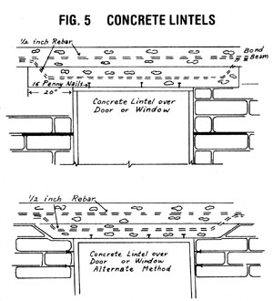

Putting Up Adobe Walls
The final installment in the series, including completing the house, setting string guides, allowing for doors and windows, laying bricks properly, bond beams and lintels, reinforcing.
May/June 1981
Though the use of adobe brick construction in the United States was developed in the desert Southwest, a growing number of do-it-yourselfers are finding it to be a satisfying and economical way to build in almost any climate. In a new book-which should be available through Charles Scribner's Sons by the time you read this-author/builder Duane Newcomb clearly describes how he put together an adobe house that's now valued at $130,000 .. . for only $20,000. We were impressed enough by the manuscript of the instructive volume to obtain the right to excerpt Chapters Three and Five. In the last issue of MOTHER we presented "Making Adobe Bricks", and here we complete the series with ...
Text and Illustrations from The Owner-BuiltAdobe House by Duane Newcomb, copyright 1980 by the author. Reprinted with the permission of the author.
There are several systems utilized today in constructing adobe walls. Which system you use depends primarily on whether or not you are building in earthquake country. In New Mexico, for instance, the code allows the builder to lay bricks into a self-supporting wall without reinforcement. In California, where you must consider earthquakes, you are required to use either steel reinforcing rods or a wooden post-frame support. Each of these systems will be explained later in this chapter.
GETTING YOUR EQUIPMENT TOGETHER
No matter where you build, the equipment needed to lay bricks is about the same. My own list includes the following: wheelbarrow, mason's trowel, joint tool, wire brush, shovel, hone brick splitter or wide chisel, a long level (or mason's level), nylon cord, gloves, nails, and a story pole.
MIXING MORTAR
The best formula for mortar that is to be used in laying up exposed adobe bricks is 1 part cement to 2-1/2 parts sand. This mortar is waterproofed by adding 1-1/2 gallons (5.7 L.) of emulsified asphalt to each sack of cement.
In New Mexico, where the adobe bricks are covered with plaster, most builders utilize adobe mud mortar, which is adobe dirt that is first screened to remove rocks and then mixed with water to form a stiff paste.
The rule is: If the bricks are to be exposed, use a waterproof cement mortar. If the building department allows, and your walls are to be plastered, use adobe mud as mortar.
You can either mix adobe mud in a cement mixer, or mix it directly in a contractor's wheelbarrow with a hoe, making only a small amount of mortar at a time.
LAYING ADOBE BRICKS PROPERLY
You will find it useful to estimate roughly the number of bricks needed in a wall section before you start to lay up the wall itself. I find that I am able to work much faster if I have the approximate number of bricks as near as possible to the section I am going to work. A simple guideline is to count on 150 to 155 16-inch (41 cm.) bricks or 160 to 165 14-inch (36 cm.) bricks for every 10 feet (3.0 m.) of wall.
Unless your window widths are well over 4 feet (1.2 m.), do not make any allowance in your calculations for windows or doors. This will give you some overallowance for breakage and the loss that always occurs when you have to split bricks.
To start laying your bricks, wet the top of the foundation and place some mortar on it, spreading the mortar with a trowel to a 3/4-inch (2 cm.) thickness. Next, set the two end bricks in the wall or wall section.
Place string guides along the wall by driving two nails in each end brick as shown in Fig. 1. and tying nylon cord between the nails. This will allow you to keep the top of each course level; however, you must take considerable care with the corners to insure that they are straight vertically. Check frequently with your level.
You will also find a story pole useful in keeping each course of bricks at the proper height. A story pole is a pole on which you have marked off the top of each brick course to the top of the wall.
Adobes are, on the average, about 4 inches (10 cm.) thick. The recommended joint thickness is 3/4 inch (2 cm.). If you allow 3/4 inch for the first joint, the top of the first brick should then be marked on your story pole at 4-3/4 inches (12 cm.), the top of the next brick at 9-1/2 inches (24 cm.), and so on, until you reach the desired height of the wall, minus the bond beam. Since adobe is not a perfectly uniform material, the height of the bricks will vary somewhat. I found that mine ranged from 3-1/2 to 5 inches (9-13 cm.). If you simply keep the top of each row level as you put your bricks up, however, the rows will look quite uniform.
Now continue laying your adobes from one corner to the other end. When you start the next row, overlap your adobe bricks by 50 percent (Fig. 1). Fill the vertical joints with mortar after you complete each course. If your bricks are to be plastered over, don't worry about the appearance. However, if they are to be exposed, take care to make the top of each row as straight as possible.
To give the finished bricks a neat, tailored appearance, rake the joint back about half an inch with a raking tool after the mortar has begun to harden but is still workable. Now, take a steel brush and clean the mortar off the bricks themselves.
If you like a "weeping mortar" appearance, do not rake the mortar joints back, but clean the mortar from the bricks before it dries.
ALLOWING FOR DOORS AND WINDOWS
Wherever you intend to place doors and windows in your wall, you must build what is called a rough buck. This is a rough lumber frame that provides a rectangular opening to receive a door or window. The rough buck frame is usually made of 2 X 8 or 2 X 10 lumber braced and supported as shown in Figs. 2 and 3.
To tie the wooden frames to the adobes, 18-inch wooden nailers made of 1 X 4 are laid between the bricks in the mortar. The rough frame is then nailed to these nailers. To allow for finishing, the rough frame should be made about 3 inches (8 cm.) wider and longer than the door or window you intend to install.
BOND BEAMS
The tops of all masonry walls (except post adobe) are tied together with bond beams (Fig. 4). This is because all walls tend to spread and crack unless tied together at the top. The bond beam is usually concrete, a minimum of 4 inches (10 cm.) thick, and reinforced with one or more steel reinforcing rods (1/2-inch rebar).
Build your forms for the bond beams from 1 X 8 or 2 X 8 lumber. Nail the bottom of the lumber to the wall and tie the top edges together with metal brackets or pieces of 1- to 2-inch (2.5-5 cm.) lumber nailed across the top of the form. The rebar can be supported on pieces of wire nailed between the two sides of the forms or on vertical rebar. At this point you will also need to place in the bond beam some sort of anchoring method to be used in securing the roof.
You can mix your own concrete for these bond beams at a ratio of 1 part cement to 2 parts sand to 3 parts gravel, or you can buy ready-mix concrete. I have seen builders mix the concrete for the bond beam in a wheelbarrow, but if you plan to mix it yourself, you will save a tremendous amount of work by renting a small cement mixer.
You may also use heavy wooden bond beams on top of the walls. These wooden bond beams should be a minimum of 4 inches (10 cm.) thick, and the ends and corners should be fastened together securely.
LINTELS
Lintels are simply bridges over openings in the walls where windows and doors will be. These lintels should be 12 inches (30 cm.) thick over openings up to 8 feet long (2.4 m.), and 18 inches (46 cm.) over openings longer than 8 feet (2.4 m.). Extend the lintel 6 to 9 inches (15-22 cm.) beyond all wall openings.
To make lintel forms, use 2 X 8's or 1 X 8's nailed into the bricks. The tops of all window and door rough bucks (the wooden window and door frames) are the bottoms of the lintel forms (Fig. 5). Since lintels are essentially a thickening of the bond beam over doors and windows, it is probably easiest to make all forms together and pour the concrete as one piece.
You may also use wooden lintels over all window and door openings. These must extend 12 to 18 inches (30-46 cm.) beyond any opening.
STEEL REINFORCING
In earthquake areas, one way of meeting the code is to utilize both horizontal and vertical steel reinforcing rods (rebar) in the walls.
Vertical rebar is placed on 2- to 4-foot (0.6-1.2 m.) centers and tied to the reinforcing steel in the footings. If you are building a single-brick-width adobe wall, split the adobes to allow for the rebar, or drill holes in the brick. If you are building a double-brick adobe wall, the vertical rebar will run between the bricks. Tie a double wall together with pieces of rebar 12 inches (30 cm.) on center in every third course.
With both single- and double-brick walls, you must place lengthwise horizontal rebar every third course, as shown in Fig. 4.
POST ADOBE CONSTRUCTION
Post adobe construction has been utilized in California for many years, producing some attractive contemporary homes.
After the foundation has been poured, the first step in building a post adobe house is to construct a wooden frame wall utilizing posts and a "beam" at the top. This post and beam construction then supports the roof, which is built directly on it. Posts are placed in the post adobe frame at all corners, every 8 feet (2.4 m.) along the wall, and on either side of all windows and doors (see Fig. 6). Bricks are laid between the posts to fill the open space. The adobe bricks do not, however, support any of the structural weight other than their own.
For the posts you can use 6 X 6's, 8 X 8's, railroad ties, or any type of built-up post.
For my own adobe I utilized a rough 4-inch (10 cm.) redwood inner post with 2 X 6's nailed to each side. This gave me a post that was 7-1/2 inches (19 cm.) wide, the same size as the bricks. When the bricks were laid into the wall, a 3/4-inch (1.9 cm.) space that was left between the edge of the 2 X 6's and the interior post was filled with mortar. This closed the opening between the post and the bricks so that the wind couldn't come through the cracks.
Building departments unfamiliar with post adobe construction often insist that the frame be engineered. However, since the post adobe frame is standard for this type of construction and has been in use for many years, an engineered frame is really unnecessary. Unfortunately, you will have to comply with whatever the building department in your area requires.
Placing the Post Holders. A number of methods are used to keep the posts in place, including 1/2-inch (1.3 cm.) anchor pins set in concrete, and large bolts. The best method is to use standard post holders (available at building supply stores). These are metal holders with prongs that extend into the concrete. The post is inserted in the post holder and nailed into place.
Post holders must be set in place while the concrete is wet. Along the walls you can simply mark the foundation forms and insert the post holders after you pour the concrete. As mentioned, posts go at all corners, a maximum of 8 feet (2.4 m.) apart along the walls, and around all doors and windows (see Fig. 7).
Around doors and windows you must leave approximately 2-1/2 inches (6 cm.) at each post for framing. If the window is to be 4 feet (1.2 m.) wide, the distance between the two posts should be 4 feet, 5 inches (1.3 m.) .
Post holders for interior walls must be set in a straight line or you will create a bulge in the wall. To insure a straight line, place a string along the middle of the proposed wall from one side of the foundation to the other. With chalk, make marks on the string where the post holders go, and take the string off at one side. When the concrete is poured, put the string back and insert the post holders in the proper positions.
Headers and Top Plates. The wooden beam at the top of the post adobe wall can be made of solid 6 X 6's or 8 X 8's, if you desire. But most modern post adobe construction utilizes a hollow "beam" consisting of two 2 X 8 top plates and 2 X 8 pieces (header beams) on either side.
The easiest way to install these "beams" is to utilize a 4 X 4 inner post with 2 X 6 pieces (cripples) 88-1/2 inches (225 cm.) long on either side to hold up the 2 X 8 header beams. These 2 X 8 header beams are placed on top of the cripples and nailed into place, using four 16-penny galvanized nails at each post (Fig. 6). After the header beams are nailed into place, then nail two 2 X 8 plates on top of these to form a hollow "beam".
Rough-Framing the Doors and Windows. Post adobe construction requires a post on either side of all doors and windows. Windows are rough-framed by a header at the top, a rough sill at the bottom, and a trimmer on either side that's the same width as the post. Doors are framed by a header on top and two trimmers on either side.
Because you will need a sash around windows and doors, add an extra 2-1/2 inches (6.4 cm.) to all window and door heights and widths.
INTERIOR WALLS
Interior walls can be built of adobe bricks or by standard wood frame construction.
If you are not building a post adobe house, tie the interior walls to the exterior walls by overlapping the bricks exactly as you would for a corner wall. You must also pour a bond beam for each interior wall and tie them into the bond beams of the exterior walls.
If you are building a post adobe house, install a post at the junction of an interior adobe wall with an exterior adobe wall, and build that wall directly into the post.
Wood frame interior walls are often used in adobe houses because they are easier to build than adobe walls. They also make excellent plumbing walls, since it is difficult to lay adobe bricks around pipes.
Construct wood frame walls of 2 X 4's as shown in Fig. 8. When you are building a plumbing wall and the pipes are not quite in line, construct the wall of 2 X 6's instead of 2 X 4's.
To lay out the wall plate, take the bottom and top 2 X 4's (called plates) and cut them the exact length of the wall you intend to build. Then temporarily nail the plates together. If the wall is longer than the 2 X 4's you are using, add 2 X 4's to reach the desired length.
Now take a tape measure and, starting at one end, make a mark with a pencil every 16 inches (41 cm.) on the edges of the two plates. This process marks the centers of the wall studs (vertical 2 X 4's). Two 2 X 4 trimmers also go around each door and window, as shown in Fig. 8.
Some builders like to mark the edge of each stud instead of the center. Since the standard width of most 2 X 4's is 1-1/2 inches (3.8 cm.), the first edge would fall 15-1/4 inches (38.7 cm.) from the corner, the second 31-1/4 inches (79.4 cm.), and so forth.
After you have marked the plates, take them apart, cut the 2 X 4 studs to size, and nail the wall plate together according to your plan. As noted, headers (supporting pieces) go over each door and window. When you are finished, stand the wall plate up, place it in the proper position, and nail it to the floor with cement nails.
You can tie this wall into an adobe wall by placing nailers between the adobe blocks as you build the wall (much as we did for the rough bucks). Or you can build the stud wall first, joining the two walls with 20-penny nails by embedding the heads of the 20-penny nails in the mortar of the joints, as shown in Fig. 8.
|
|
|
|
|
|
|
|
|
 |
|
|
 |
|
|